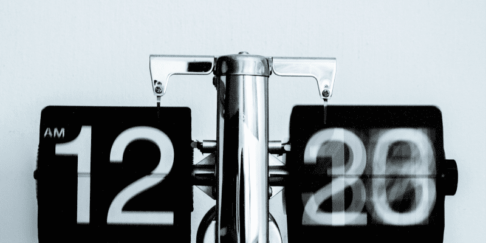
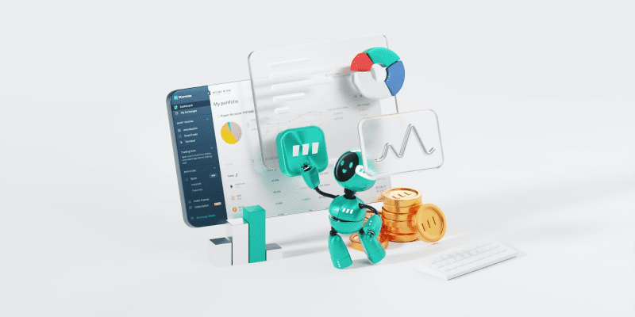

Блог 2ta
О маркетинге влияния
Милана Гончарова
Co-Founder / CTO
1 июл
2 мин
Браузерное расширение для анализа instagram
ЦА - руководители отделов работы с блогерами. Маркетологи. Директора по маркетингу, чтобы расширить кругозор и знать об инструментах, написать своим подчиненным, типа: как дела, вон инструмент нашел вам. Теперь не нужно платить за аналитику. Не хотите читать - вот ссылка на скачивание плагина для браузера. С помощью него вы сможете быстро узнать ER любого инстаграм блогера. Современный инфлюенс маркетинг не может обойтись без аналитики.
4 июн
2 мин
Как провести РК у 3000 блогеров
Нужно выбрать цели, к которым мы стремимся, исходя из них нужно выбирать инструменты. На старте же желательно определиться на сколько они достижимы. Как вы думаете, можно получить продажи яхт через твиттер?
Мы добиваемся продаж? Добиваемся узнаваемости? Какой вы выберем KPI в итоге?
Что еще бывает, какие ориентировочно стоимости с источниками.
Мы добиваемся продаж? Добиваемся узнаваемости? Какой вы выберем KPI в итоге?
Что еще бывает, какие ориентировочно стоимости с источниками.
Анастасия Федотова
Co-Founder / CTO
24 мая
8 мин
Сколько времени экономит
Представим что вы хотите провести рекламную компанию с 10ю блогерами на youtube. Любая РК состоит из этапов:

- Подобрать блогеров; (как подбирать не понятно)
- Первый контакт. Выяснить их варианты сотрудничества, получить согласие;
- Отфильтровать неэффективных;
Ярослав Астахов
Co-Founder / CTO
20 апр
2 мин
Аудитория блогера там, где он живет
Хочется думать, что если блогер из Череповца то и аудитория его живёт там же. Но чаще всего — это не так. Блоги живут в интернете и аудитория блогера может быть откуда угодно. Поэтому если вам нужна аудитория конкретного региона — нужно оценивать местоположение аудитории.
Иван Иванов
Co-Founder / CTO
16 мaрт 2020
2 мин
Другой способ оценки эффективности блогеров
Привет, я — Ваня и я работаю в сфере инфлюенс-маркетинга 6 лет на разных должностях. Я спроектировал и реализовывал архитектуру маркетплейса блогеров, построил процессы для агентства. Научился делать по 2000 размещений в месяц, общаться с сотнями блогеров в день и объяснять блогерам, что у налоговой и так есть их паспортные данные.
